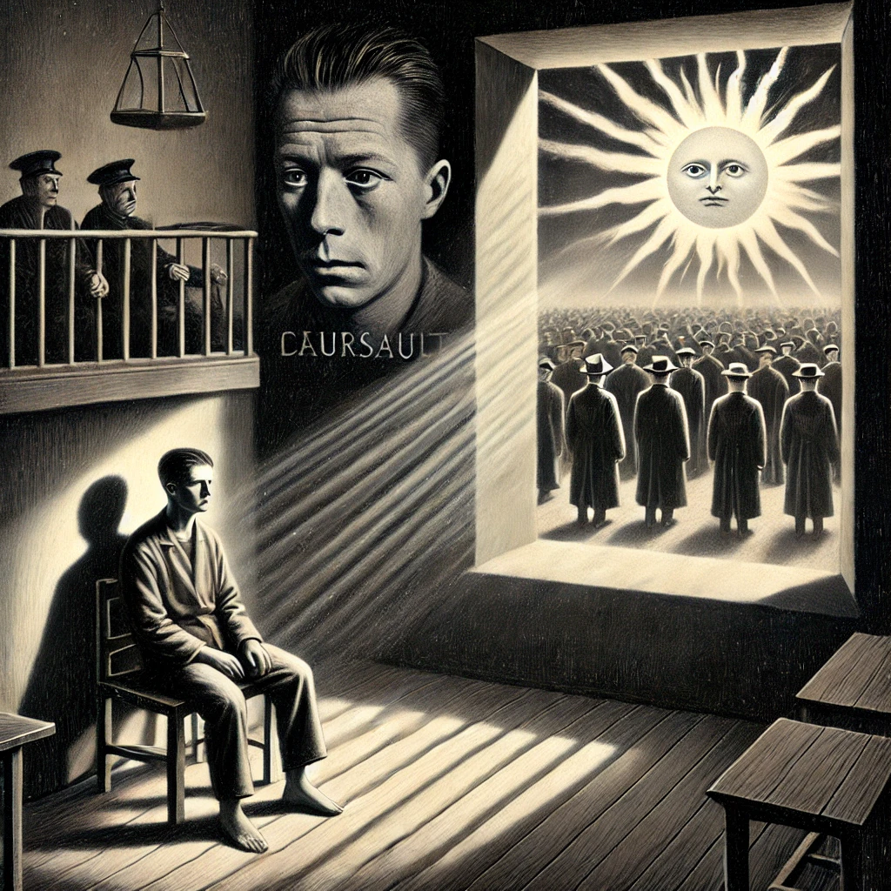

작가
알베르 까뮈
출판일
1942년
감상평에 대한 AI그림
"오늘, 엄마가 죽었다. 아니 어쩌면 어제."라는 첫 문장으로 유명한 알베르 까뮈의 이방인은 감정표현이 적고 무심한 뫼르소의 이야기에 대해 담고있다. 어머니의 죽음에도 별 다른 감정을 내비치지 않는 뫼르소는 우연한 사건들로 인해 살인을 저지르게 된다. 이에 뫼르소는 재판을 받고 그의 무심한 성격들과 어머니의 죽음에 슬퍼하지 않았다는 사실등이 종합되어 사형선고를 받게되며 뫼르소는 사형 전 삶을 회고하며 처음으로 기쁨과 분노등의 감정을 표현하게 된다. 뫼르소는 자신의 처형날에 많은 사람들이 자신에게 증오를 쏟아부으며, 자신이 혼자라는 느낌을 최대한 덜 받으며 끝나기를 바라는 것으로 이야기는 막을 내린다.

감상평에 대한 AI평가
~~~~AI평가~~~~~
✨ 네가 쓴 독서록은 『이방인』의 핵심 내용을 잘 정리하고 있어. 특히, 뫼르소의 감정 없는 태도와 그로 인해 결국 사형선고를 받게 되는 과정을 명확하게 서술했어. 또한, 마지막 순간에 감정을 표현하게 되는 점까지 언급하면서 이야기의 흐름을 잘 잡았어
✨ 다만, 몇 가지 보완하면 더 깊이 있는 독서록이 될 수 있을 것 같아. 예를 들어, 뫼르소가 왜 감정을 잘 드러내지 않는지, 그리고 그가 마지막에 기쁨과 분노를 느끼는 것이 어떤 의미를 가지는지 조금 더 분석해 보면 어떨까? 까뮈의 실존주의적 관점에서 본다면, 뫼르소는 사회가 요구하는 감정을 따라가지 않기 때문에 단죄된 것이고, 마지막 순간에야 비로소 세상의 부조리를 받아들이면서 자유를 느꼈다고 해석할 수도 있어.
✨ 전체적으로 내용을 충실하게 정리했고, 문장도 자연스러워서 독서록으로서 훌륭해. 조금 더 뫼르소의 심리나 철학적 의미를 고민해 보면 더 깊이 있는 감상이 될 거야! 😊